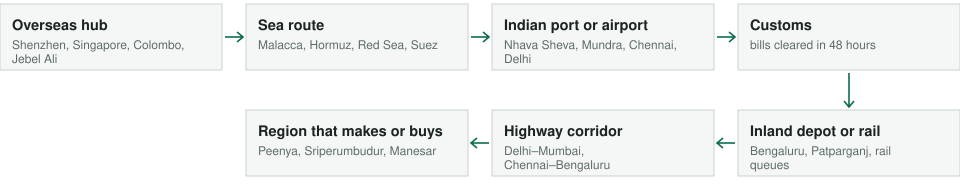

How India's trade moves
The reference behind the monitor: the chain each shipment travels, what each gateway carries, which regions depend on which gateways, and where imported parts come from. It changes slowly, once a year or when a gateway is added, so a colour on the globe can be traced to the goods and places behind it.
The chain
Every colour on the globe sits somewhere on this chain. A box held at an overseas hub, a slower sea route, a full yard, a customs backlog, a train queue or a blocked highway each pushes the delay one step nearer the factory or the buyer.

What each gateway carries
India's trade in 2025-26 through its biggest gateways, $ billion, with the top three product groups each way. A reader finds their own goods here, then the gateway on the globe.
| Gateway | Total, $ bn | Top exports | Top imports |
|---|---|---|---|
| Nhava Sheva | 153 | Machinery 9.4 · Medicines 5.7 · Organic chemicals 5.4 | Machinery 17.7 · Electronics 9.1 · Plastics 7.9 |
| Delhi airport | 89 | Electronics 6.9 · Machinery 4.1 · Garments 1.5 | Gold and gems 28.7 · Electronics 25.2 · Machinery 5.8 |
| Mundra | 72 | Rice and cereals 3.0 · Cotton 2.3 · Vehicles and parts 2.0 | Oil, gas and coal 17.5 · Machinery 3.2 · Fertiliser 2.7 |
| Chennai port | 64 | Vehicles and parts 3.2 · Machinery 2.3 · Electronics 1.7 | Machinery 9.3 · Electronics 7.6 · Oil, gas and coal 5.8 |
| Mumbai airport | 59 | Medicines 2.6 · Electronics 2.4 · Machinery 1.8 | Gold and gems 20.4 · Machinery 8.4 · Electronics 7.3 |
| Chennai airport | 55 | Electronics 16.2 · Gold and gems 0.8 · Machinery 0.6 | Electronics 21.3 · Gold and gems 5.3 · Machinery 4.2 |
| Bengaluru airport | 41 | Electronics 9.1 · Machinery 2.7 · Instruments 0.9 | Electronics 14.5 · Machinery 4.4 · Instruments 2.0 |
| Kolkata | 26 | Iron and steel 0.9 · Steel goods 0.8 · Seafood 0.7 | Oil, gas and coal 6.3 · Edible oils 3.2 · Machinery 1.8 |
| Visakhapatnam | 26 | Seafood 1.9 · Iron and steel 1.6 · Oil, gas and coal 0.9 | Oil, gas and coal 11.5 · Fertiliser 1.3 · Ores 0.8 |
| Kandla | 25 | Rice and cereals 1.8 · Sugar 0.6 · Organic chemicals 0.4 | Edible oils 5.4 · Oil, gas and coal 5.1 · Fertiliser 2.6 |
| Tuticorin | 15 | Knitwear 1.4 · Electronics 0.8 · Home textiles 0.7 | Fruit and nuts 1.2 · Project goods 0.8 · Oil, gas and coal 0.8 |
| Kochi | 14 | Spices, coffee, tea 0.9 · Seafood 0.7 · Cosmetics and oils 0.3 | Oil, gas and coal 7.5 · Spices, coffee, tea 0.2 · Plastics 0.2 |
| Hyderabad airport | 10 | Organic chemicals 2.5 · Medicines 1.5 · Electronics 0.4 | Gold and gems 1.6 · Electronics 0.8 · Machinery 0.7 |
DGCI&S trade by port and product chapter.
Which gateways each region depends on
The manufacturing regions in the model and the share of their exports that leaves through each gateway, biggest region first, with the road that carries it to the main gateway. When a gateway goes off normal, these are the regions that feel it.
| Region | Its gateways, share of exports | Road to the main gateway |
|---|---|---|
| Chennai–Sriperumbudur–Oragadam | Chennai airport 54% · Chennai port 17% · Ennore (Kamarajar) 12% | City roads (Chennai bypass) |
| Pune–Chakan–Talegaon | Nhava Sheva (JNPA) 60% · Mumbai airports 20% · Pune inland depots 11% | Mumbai–Pune Expressway |
| Bengaluru–Bidadi | Bengaluru airport 43% · Bengaluru inland depots 28% | |
| Noida–Greater Noida | Delhi NCR inland depots 46% · Delhi airport 44% | |
| Kolar–Narasapura | Bengaluru airport 88% · Chennai airport 10% | NH-75 |
| NCR Haryana–Rajasthan belt | Delhi NCR inland depots 44% · Pipavav 15% · Delhi airport 13% | |
| Hosur | Bengaluru airport 39% · Chennai inland depots 14% · Ennore (Kamarajar) 12% | NH-44 (airport road) and NH-44 south |
| Hyderabad | Hyderabad inland depot 30% · Hyderabad airport 27% · Nhava Sheva (JNPA) 16% | |
| Ahmedabad–Sanand–Hansalpur | Mundra 37% · Pipavav 24% · Gujarat inland depots 12% | NH-41 and NH-47 |
| Chhatrapati Sambhajinagar | Nhava Sheva (JNPA) 89% | NH-48 / Expressway |
| Vadodara–Savli–Halol | Nhava Sheva (JNPA) 43% · Hazira 16% | NH-48 |
| Coimbatore | Chennai port 27% · Tuticorin 15% | NH-48 / NH-544 via Salem |
| Nashik | Nhava Sheva (JNPA) 66% · Mumbai airports 10% | |
| Rajkot | Mundra 68% · Nhava Sheva (JNPA) 17% | |
| Ludhiana–Hoshiarpur | Ludhiana inland depots 58% · Delhi airport 11% | |
| Anantapur | Chennai port 55% · Kattupalli 28% · Chennai inland depots 13% | NH-48 |
| Sri City | Ennore (Kamarajar) 29% · Chennai port 25% | |
| Pithampur–Indore | Nhava Sheva (JNPA) 26% | NH-52 |
| Belagavi | Nhava Sheva (JNPA) 43% | NH-48 > NH-48 / Expressway |
| Kanpur | Delhi airport 38% | NH-19 / Agra–Lucknow Expressway |
| Nagpur | Nhava Sheva (JNPA) 18% | Samruddhi / NH-53 |
DGCI&S exports by district and port; our corridor model (data/tower/model/corridors.csv).
Choke points
Gateways that carry at least 30% of a region's exports. The more regions lean on one gateway, the further a problem there spreads.
| Gateway | Regions leaning on it | Which | Their boxed exports through it, $ million |
|---|---|---|---|
| Chennai airport | 1 | Chennai–Sriperumbudur–Oragadam | 15,519 |
| Bengaluru airport | 3 | Kolar–Narasapura, Bengaluru–Bidadi, Hosur | 9,643 |
| Nhava Sheva (JNPA) | 5 | Chhatrapati Sambhajinagar, Nashik, Pune–Chakan–Talegaon, Vadodara–Savli–Halol, Belagavi | 9,327 |
| Delhi NCR inland depots | 2 | Noida–Greater Noida, NCR Haryana–Rajasthan belt | 6,147 |
| Delhi airport | 2 | Noida–Greater Noida, Kanpur | 2,785 |
| Mundra | 2 | Rajkot, Ahmedabad–Sanand–Hansalpur | 1,460 |
| Hyderabad inland depot | 1 | Hyderabad | 655 |
| Ludhiana inland depots | 1 | Ludhiana–Hoshiarpur | 444 |
| Chennai port | 1 | Anantapur | 61 |
Our corridor model; boxed exports are containers and air.
Where the imported parts come from
The fifteen biggest imported parts for India's electronics, machinery and vehicle makers: where they come from, how much depends on China and Hong Kong, the gateway they usually land at, and how much flies. HS is the customs product code.
| Used in | Part | Imports, $ million | Top origin | China and HK | Usual gateway | By air |
|---|---|---|---|---|---|---|
| Electronics | Processors and controllers, whether or not combined with mem | 17,542 | China | 39% | Chennai airport | 91% |
| Electronics | Other (HS 851779) | 16,594 | China | 71% | Chennai airport | 97% |
| Electronics | Memories (HS 854232) | 6,793 | China | 52% | Delhi airport | 99% |
| Electronics | Other (HS 854239) | 5,366 | China | 64% | Delhi airport | 92% |
| Electronics and Auto | Lithium-ion (HS 850760) | 4,697 | China | 91% | Nhava Sheva (JNPA) | 15% |
| Electronics | Prts and accssrs of mchns of heading no.8471 (HS 847330) | 3,723 | China | 55% | Chennai airport | 63% |
| Electronics | Photovoltaic cells not assembled in modules or made up into | 3,059 | China | 62% | Nhava Sheva (JNPA) | 14% |
| Auto | Otr prtsandaccssrs of vhcls of heading 8701-8705 (HS 870899) | 2,431 | China | 33% | Nhava Sheva (JNPA) | 12% |
| Electronics | Static converters | 2,368 | China | 61% | Nhava Sheva (JNPA) | 30% |
| Electronics | Without drivers or control circuits of organic light-emittin | 2,241 | China | 65% | Chennai airport | 87% |
| Electronics | Other: of liquid crystals (HS 852491) | 1,895 | China | 94% | Delhi airport | 52% |
| Auto | Gear boxes (HS 870840) | 1,840 | Japan | 11% | Kattupalli | 3% |
| Electronics | Printed circuits | 1,677 | China | 69% | Delhi airport | 62% |
| Electronics | Other appratus of heading 8536 (HS 853690) | 1,557 | China | 44% | Mumbai airports | 50% |
| Machinery | Other appliances : (HS 848180) | 1,481 | China | 22% | Nhava Sheva (JNPA) | 42% |
DGCI&S imports by product, origin and port; our exposure file.
Part of the India Freight Monitor, rebuilt every morning from public data with no hand edits. I'm Priyanka Bharadwaj; if you move goods through India, get in touch on LinkedIn.